class: center, middle # Convolutional Neural Networks Charles Ollion - Olivier Grisel .affiliations[    ] --- ## Used everywhere for Vision .center[ <img src="images/vision.png" style="width: 600px;" /> ] --- ## Many other applications <br/> ### Speech recognition & speech synthesis -- ### Natural Language Processing -- ### Protein/DNA binding prediction -- ### Any problem with a spatial (or sequential) structure --- ## ConvNets for image classification CNN = Convolutional Neural Networks = ConvNet <br/> -- .center[ <img src="images/lenet.png" style="width: 760px;" /> ] .footnote.small[ LeCun, Y., Bottou, L., Bengio, Y., and Haffner, P. (1998). Gradient-based learning applied to document recognition. ] --- # Outline <br/> ### Convolutions -- ### CNNs for Image Classification -- ### CNN Architectures --- class: middle, center # Convolutions --- ## Motivations Standard Dense Layer for an image input: ```python x = Input((640, 480, 3), dtype='float32') # shape of x is: (None, 640, 480, 3) x = Flatten()(x) # shape of x is: (None, 640 x 480 x 3) z = Dense(1000)(x) ``` How many parameters in the Dense layer? -- <br/> $640 \times 480 \times 3 \times 1000 + 1000 = 922M !$ -- Spatial organization of the input is destroyed by `Flatten` -- We never use Dense layers directly on large images. Most standard solution is **convolution** layers --- ### Fully Connected Network: MLP ```python input_image = Input(shape=(28, 28, 1)) x = Flatten()(input_image) x = Dense(256, activation='relu')(x) x = Dense(10, activation='softmax')(x) mlp = Model(inputs=input_image, outputs=x) ``` -- ### Convolutional Network ```python input_image = Input(shape=(28, 28, 1)) *x = Conv2D(32, 5, activation='relu')(input_image) *x = MaxPool2D(2, strides=2)(x) *x = Conv2D(64, 3, activation='relu')(x) *x = MaxPool2D(2, strides=2)(x) x = Flatten()(x) x = Dense(256, activation='relu')(x) x = Dense(10, activation='softmax')(x) convnet = Model(inputs=input_image, outputs=x) ``` -- 2D spatial organization of features preserved untill `Flatten`. --- ## Convolution in a neural network .center[ ] - $x$ is a $3 \times 3$ chunk (dark area) of the image _(blue array)_ - Each output neuron is parametrized with the $3 \times 3$ weight matrix $\mathbf{w}$ _(small numbers)_ .footnote.small[ <br/><br/> These slides extensively use convolution visualisation by V. Dumoulin available at https://github.com/vdumoulin/conv_arithmetic ] --- ## Convolution in a neural network .center[ 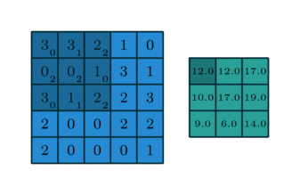 ] - $x$ is a $3 \times 3$ chunk (dark area) of the image _(blue array)_ - Each output neuron is parametrized with the $3 \times 3$ weight matrix $\mathbf{w}$ _(small numbers)_ The activation obtained by sliding the $3 \times 3$ window and computing: $$ z(x) = relu(\mathbf{w}^T x + b) $$ --- ## Motivations ### Local connectivity - A neuron depends only on a few local input neurons - Translation invariance -- ### Comparison to Fully connected - Parameter sharing: reduce overfitting - Make use of spatial structure: **strong prior** for vision! -- ### Animal Vision Analogy .small[ Hubel & Wiesel, RECEPTIVE FIELDS OF SINGLE NEURONES IN THE CAT'S STRIATE CORTEX (1959) ] --- ## Why Convolution Discrete convolution (actually cross-correlation) between two functions $f$ and $g$: $$ (f \star g) (x) = \sum\_{a+b=x} f(a) . g(b) = \sum\_{a} f(a) . g(x + a) $$ -- 2D-convolutions (actually 2D cross-correlation): $$ (f \star g) (x, y) = \sum_n \sum_m f(n, m) . g(x + n, y + m) $$ -- $f$ is a convolution **kernel** or **filter** applied to the 2-d map $g$ (our image) --- ## Example: convolution image - Image: $im$ of dimensions $5 \times 5$ - Kernel: $k$ of dimensions $3 \times 3$ $ (k \star im) (x, y) = \sum\limits\_{n=0}^2 \sum\limits\_{m=0}^2 k(n, m) . im(x + n - 1, y + m - 1) $ .center[ ] ??? This formula actually implements a cross-correlation instead of a true convolution: https://en.wikipedia.org/wiki/Cross-correlation The formula for an actual convolution would be: $ (k \star im) (x, y) = \sum\limits\_{n=0}^2 \sum\limits\_{m=0}^2 k(n, m) . im(x - n + 1, y - m + 1) $ Then the indexing of the kernel components would be done in the opposite direction of the image indexing in that case. In practice, convnets can use either cross-correlations or true convolutions, this does not have any impact on the final function computed by the network as the kernel parameters are initialized randomly and are trained to minimize the loss on the training set in both cases. --- ## Channels Colored image = tensor of shape `(height, width, channels)` -- Convolutions are usually computed for each channel and summed: .center[ <img src="images/convmap1_dims.svg" style="width: 300px;" /> ] -- $$ (k \star im^{color}) = \sum\limits\_{c=0}^2 k^c \star im^c $$ --- ## Multiple convolutions .center[ 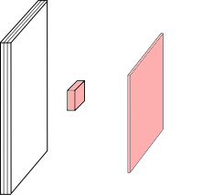 ] --- ## Multiple convolutions .center[ 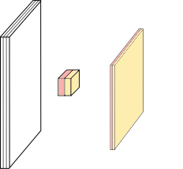 ] --- ## Multiple convolutions .center[ 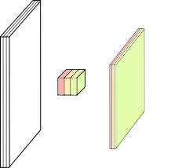 ] --- ## Multiple convolutions .center[ 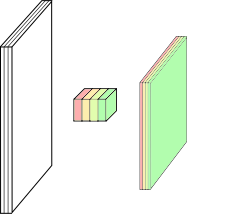 ] --- ## Multiple convolutions .center[ <img src="images/convmap_dims.svg" style="width: 400px;" /> ] -- - Kernel size aka receptive field (usually 1, 3, 5, 7, 11) - Output dimension: `length - kernel_size + 1` --- ## Strides - Strides: increment step size for the convolution operator - Reduces the size of the output map .center[ <img src="images/no_padding_strides.gif" style="width: 260px;" /> ] .center.small[ Example with kernel size $3 \times 3$ and a stride of $2$ (image in blue) ] --- ## Padding - Padding: artificially fill borders of image - Useful to keep spatial dimension constant across filters - Useful with strides and large receptive fields - Usually: fill with 0s .center[ <img src="images/same_padding_no_strides.gif" style="width: 260px;" /> ] --- ## Dealing with shapes **Kernel** or **Filter** shape $(F, F, C^i, C^o)$ .left-column[ - $F \times F$ kernel size, - $C^i$ input channels - $C^o$ output channels ] .right-column[ .center[ <img src="images/kernel.svg" style="width: 100px;" /> ] ] -- .reset-column[ ] Number of parameters: $(F \times F \times C^i + 1) \times C^o$ -- **Activations** or **Feature maps** shape: - Input $(W^i, H^i, C^i)$ - Output $(W^o, H^o, C^o)$ -- $W^o = (W^i - F + 2P) / S + 1$ ??? The **filters** holds the **trainable parameters** of the model (excluding the biases). The **feature maps** are the outputs (or **activations**) of convolution layers when **applied to a specific batch of images**. --- ## Pooling - Spatial dimension reduction - Local invariance - No parameters: max or average of 2x2 units -- <br/><br/> .center[ 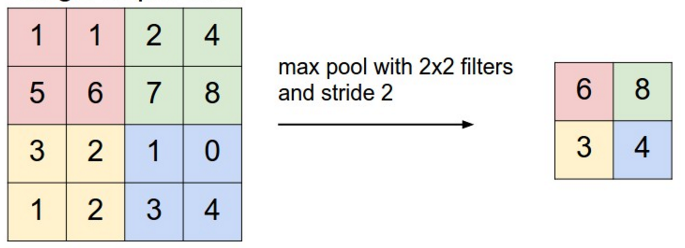 ] .footnote.small[ Schematic from Stanford http://cs231n.github.io/convolutional-networks ] --- ## Pooling - Spatial dimension reduction - Local invariance - No parameters: max or average of 2x2 units .center[ <img src="images/maxpool.svg" style="width: 380px;" /> ] --- class:middle, center # Architectures --- ## Classic ConvNet Architecture ### Input -- ### Conv blocks - Convolution + activation (relu) - Convolution + activation (relu) - ... - Maxpooling 2x2 -- ### Output - Fully connected layers - Softmax --- # AlexNet .center[ <img src="images/alexnet.png" style="width: 600px;" /> ] .footnote.small[ Simplified version of Krizhevsky, Alex, Sutskever, and Hinton. "Imagenet classification with deep convolutional neural networks." NIPS 2012 ] -- Input: 227x227x3 image First conv layer: kernel 11x11x3x96 stride 4 -- - Kernel shape: `(11,11,3,96)` - Output shape: `(55,55,96)` - Number of parameters: `34,944` - Equivalent MLP parameters: `43.7 x 1e9` --- ## AlexNet .center[ <img src="images/alexnet.png" style="width: 600px;" /> ] ```md INPUT: [227x227x3] CONV1: [55x55x96] 96 11x11 filters at stride 4, pad 0 MAX POOL1: [27x27x96] 3x3 filters at stride 2 CONV2: [27x27x256] 256 5x5 filters at stride 1, pad 2 MAX POOL2: [13x13x256] 3x3 filters at stride 2 CONV3: [13x13x384] 384 3x3 filters at stride 1, pad 1 CONV4: [13x13x384] 384 3x3 filters at stride 1, pad 1 CONV5: [13x13x256] 256 3x3 filters at stride 1, pad 1 MAX POOL3: [6x6x256] 3x3 filters at stride 2 FC6: [4096] 4096 neurons FC7: [4096] 4096 neurons FC8: [1000] 1000 neurons (softmax logits) ``` --- ## Hierarchical representation .center[ <img src="images/lecunconv.png" style="width: 760px;" /> ] --- ## VGG-16 .center[ 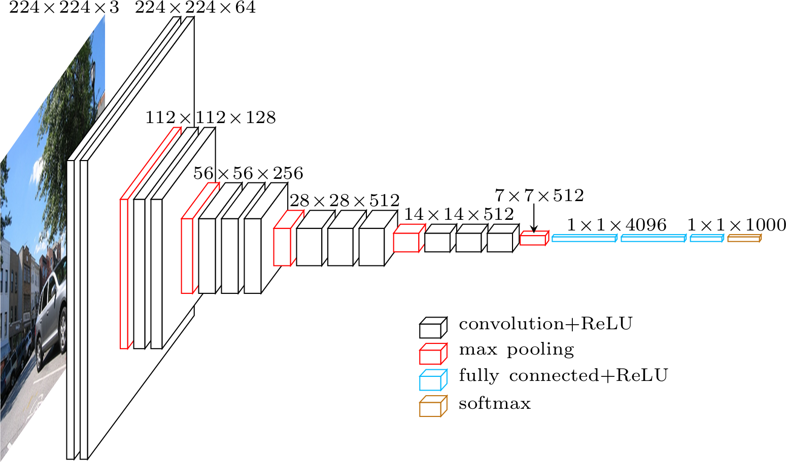 ] .footnote.small[ Simonyan, Karen, and Zisserman. "Very deep convolutional networks for large-scale image recognition." (2014) ] --- ## VGG in Keras ```python model.add(Convolution2D(64, 3, 3, activation='relu',input_shape=(3,224,224))) model.add(Convolution2D(64, 3, 3, activation='relu')) model.add(MaxPooling2D((2,2), strides=(2,2))) model.add(Convolution2D(128, 3, 3, activation='relu')) model.add(Convolution2D(128, 3, 3, activation='relu')) model.add(MaxPooling2D((2,2), strides=(2,2))) model.add(Convolution2D(256, 3, 3, activation='relu')) model.add(Convolution2D(256, 3, 3, activation='relu')) model.add(Convolution2D(256, 3, 3, activation='relu')) model.add(MaxPooling2D((2,2), strides=(2,2))) model.add(Convolution2D(512, 3, 3, activation='relu')) model.add(Convolution2D(512, 3, 3, activation='relu')) model.add(Convolution2D(512, 3, 3, activation='relu')) model.add(MaxPooling2D((2,2), strides=(2,2))) model.add(Convolution2D(512, 3, 3, activation='relu')) model.add(Convolution2D(512, 3, 3, activation='relu')) model.add(Convolution2D(512, 3, 3, activation='relu')) model.add(MaxPooling2D((2,2), strides=(2,2))) model.add(Flatten()) model.add(Dense(4096, activation='relu')) model.add(Dropout(0.5)) model.add(Dense(4096, activation='relu')) model.add(Dropout(0.5)) model.add(Dense(1000, activation='softmax')) ``` --- ## Memory and Parameters ```md Activation maps Parameters INPUT: [224x224x3] = 150K 0 CONV3-64: [224x224x64] = 3.2M (3x3x3)x64 = 1,728 CONV3-64: [224x224x64] = 3.2M (3x3x64)x64 = 36,864 POOL2: [112x112x64] = 800K 0 CONV3-128: [112x112x128] = 1.6M (3x3x64)x128 = 73,728 CONV3-128: [112x112x128] = 1.6M (3x3x128)x128 = 147,456 POOL2: [56x56x128] = 400K 0 CONV3-256: [56x56x256] = 800K (3x3x128)x256 = 294,912 CONV3-256: [56x56x256] = 800K (3x3x256)x256 = 589,824 CONV3-256: [56x56x256] = 800K (3x3x256)x256 = 589,824 POOL2: [28x28x256] = 200K 0 CONV3-512: [28x28x512] = 400K (3x3x256)x512 = 1,179,648 CONV3-512: [28x28x512] = 400K (3x3x512)x512 = 2,359,296 CONV3-512: [28x28x512] = 400K (3x3x512)x512 = 2,359,296 POOL2: [14x14x512] = 100K 0 CONV3-512: [14x14x512] = 100K (3x3x512)x512 = 2,359,296 CONV3-512: [14x14x512] = 100K (3x3x512)x512 = 2,359,296 CONV3-512: [14x14x512] = 100K (3x3x512)x512 = 2,359,296 POOL2: [7x7x512] = 25K 0 FC: [1x1x4096] = 4096 7x7x512x4096 = 102,760,448 FC: [1x1x4096] = 4096 4096x4096 = 16,777,216 FC: [1x1x1000] = 1000 4096x1000 = 4,096,000 TOTAL activations: 24M x 4 bytes ~= 93MB / image (x2 for backward) TOTAL parameters: 138M x 4 bytes ~= 552MB (x2 for plain SGD, x4 for Adam) ``` --- ## Memory and Parameters ```md Activation maps Parameters INPUT: [224x224x3] = 150K 0 *CONV3-64: [224x224x64] = 3.2M (3x3x3)x64 = 1,728 *CONV3-64: [224x224x64] = 3.2M (3x3x64)x64 = 36,864 POOL2: [112x112x64] = 800K 0 CONV3-128: [112x112x128] = 1.6M (3x3x64)x128 = 73,728 CONV3-128: [112x112x128] = 1.6M (3x3x128)x128 = 147,456 POOL2: [56x56x128] = 400K 0 CONV3-256: [56x56x256] = 800K (3x3x128)x256 = 294,912 CONV3-256: [56x56x256] = 800K (3x3x256)x256 = 589,824 CONV3-256: [56x56x256] = 800K (3x3x256)x256 = 589,824 POOL2: [28x28x256] = 200K 0 CONV3-512: [28x28x512] = 400K (3x3x256)x512 = 1,179,648 CONV3-512: [28x28x512] = 400K (3x3x512)x512 = 2,359,296 CONV3-512: [28x28x512] = 400K (3x3x512)x512 = 2,359,296 POOL2: [14x14x512] = 100K 0 CONV3-512: [14x14x512] = 100K (3x3x512)x512 = 2,359,296 CONV3-512: [14x14x512] = 100K (3x3x512)x512 = 2,359,296 CONV3-512: [14x14x512] = 100K (3x3x512)x512 = 2,359,296 POOL2: [7x7x512] = 25K 0 *FC: [1x1x4096] = 4096 7x7x512x4096 = 102,760,448 FC: [1x1x4096] = 4096 4096x4096 = 16,777,216 FC: [1x1x1000] = 1000 4096x1000 = 4,096,000 TOTAL activations: 24M x 4 bytes ~= 93MB / image (x2 for backward) TOTAL parameters: 138M x 4 bytes ~= 552MB (x2 for plain SGD, x4 for Adam) ``` --- .left-column[ ## ResNet ] .footnote.small[ .left-column[ He, Kaiming, et al. "Deep residual learning for image recognition." CVPR. 2016. ] ] .right-column[ .center[ 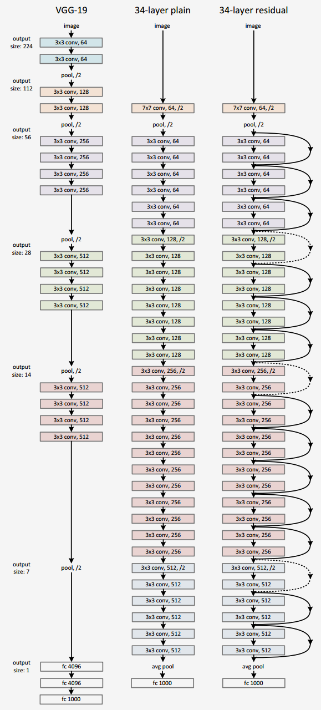 ] ] Even deeper models: 34, 50, 101, 152 layers --- .left-column[ ## ResNet ] .footnote.small[ .left-column[ He, Kaiming, et al. "Deep residual learning for image recognition." CVPR. 2016. ] ] .right-column[ .center[ ] ] A block learns the residual w.r.t. identity .center[ 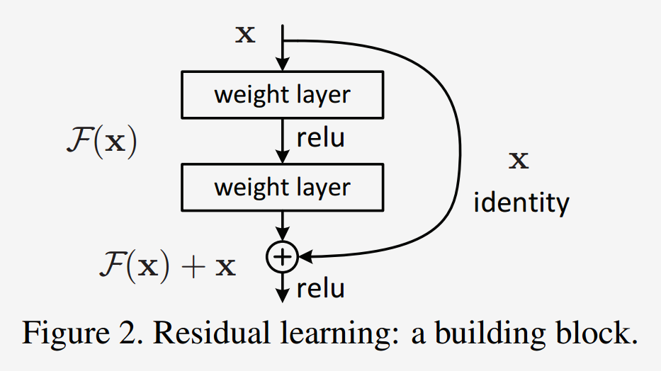 ] -- - Good optimization properties --- .left-column[ ## ResNet ] .footnote.small[ .left-column[ He, Kaiming, et al. "Deep residual learning for image recognition." CVPR. 2016. ] ] .right-column[ .center[ ] ] ResNet50 Compared to VGG: #### Superior accuracy in all vision tasks <br/>**5.25%** top-5 error vs 7.1% -- #### Less parameters <br/>**25M** vs 138M -- #### Computational complexity <br/>**3.8B Flops** vs 15.3B Flops -- #### Fully Convolutional until the last layer --- ## Deeper is better .center[ 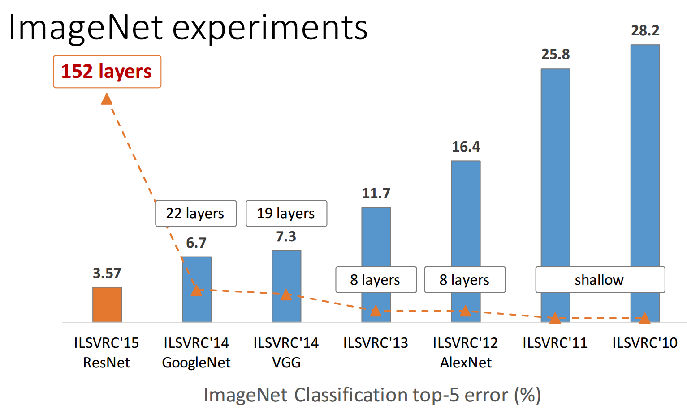 ] .footnote.small[ from Kaiming He slides "Deep residual learning for image recognition." ICML. 2016. ] --- ## State of the art - Finding right architectures: Active area or research .center[ <img src="images/inception2.png" style="width: 500px;" /> ] Modular building blocks engineering .footnote.small[ from He slides "Deep residual learning for image recognition." ICML. 2016. ] -- see also DenseNets, Wide ResNets, Fractal ResNets, ResNeXts, Pyramidal ResNets --- ## State of the art #### Top 1-accuracy, performance and size on ImageNet .center[ 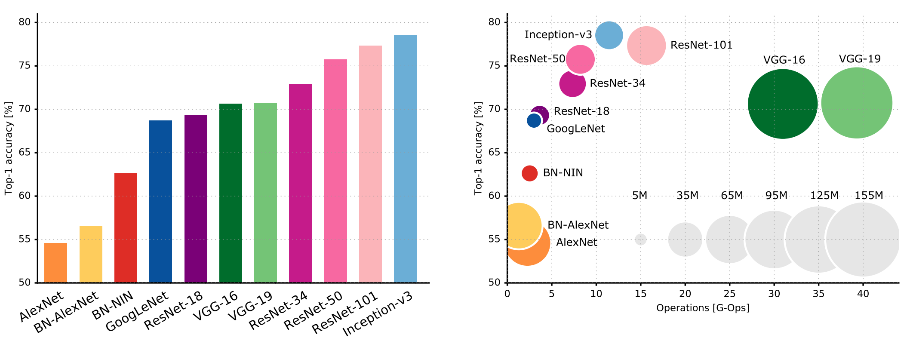 ] See also: https://paperswithcode.com/sota/image-classification-on-imagenet .footnote.small[ Canziani, Paszke, and Culurciello. "An Analysis of Deep Neural Network Models for Practical Applications." (May 2016). ] --- ## More ImageNet SOTA .left-column[ .center[ 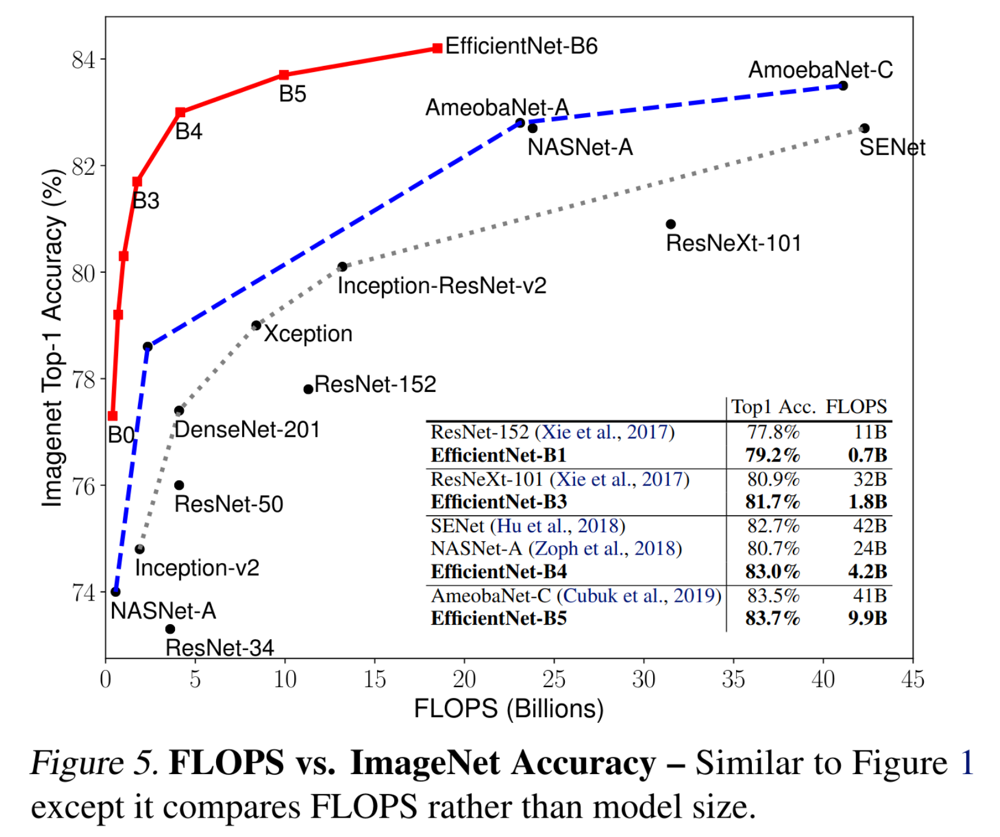 ] ] .right-column[ .center[ 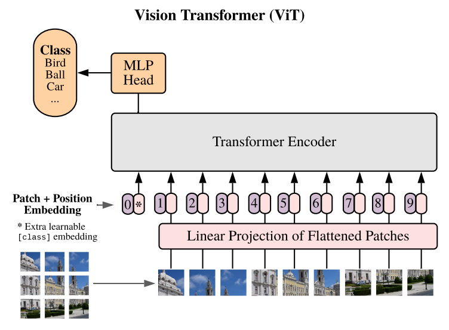 ] ] .footnote.small[ - Mingxing Tan, Quoc V. Le, [EfficientNet: Rethinking Model Scaling for Convolutional Neural Networks ](https://arxiv.org/abs/1905.11946), ICML 2019. - Irwan Bello, [LambdaNetworks: Modeling long-range Interactions without Attention](https://openreview.net/forum?id=xTJEN-ggl1b), ICLR 2021 - Dosovitskiy A. et al, [An Image is worth 16X16 Words: Transformers for Image Recognition at Scale](https://arxiv.org/pdf/2010.11929.pdf), ICLR 2021 ] --- ## State of the art .center[ 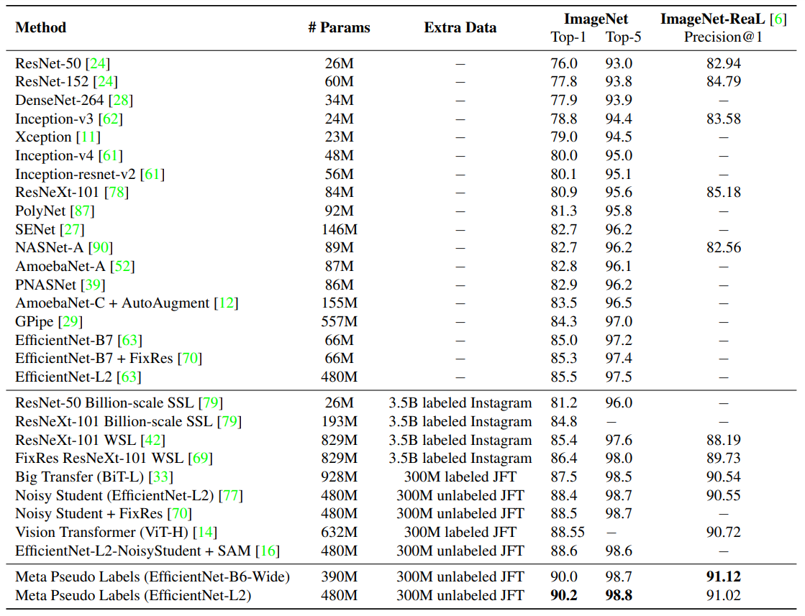 ] .footnote.small[ Meta Pseudo Labels, Hieu Pham et al. (Jan 2021) ] --- class: middle, center # Pre-trained models --- ## Pre-trained models Training a model on ImageNet from scratch takes **days or weeks**. -- Many models trained on ImageNet and their weights are publicly available! -- ### Transfer learning - Use pre-trained weights, remove last layers to compute representations of images - Train a classification model from these features on a new classification task - The network is used as a generic feature extractor - Better than handcrafted feature extraction on natural images --- ## Pre-trained models Training a model on ImageNet from scratch takes **days or weeks**. Many models trained on ImageNet and their weights are publicly available! ### Fine-tuning #### Retraining the (some) parameters of the network (given enough data) -- - Truncate the last layer(s) of the pre-trained network - Freeze the remaining layers weights - Add a (linear) classifier on top and train it for a few epochs -- - Then fine-tune the whole network or the few deepest layers - Use a smaller learning rate when fine tuning --- ## Data Augmentation .center[ 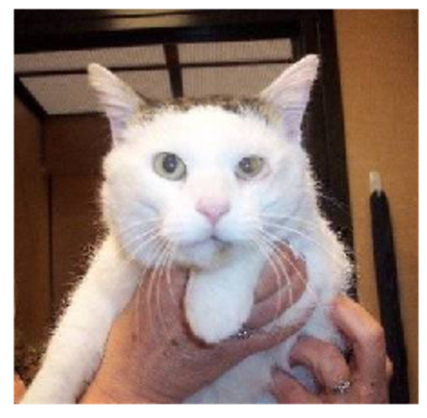 ] -- .center[ <img src="images/augmented-cat.png" style="width: 550px" /> ] -- See also: [RandAugment](https://arxiv.org/abs/1909.13719) and [Unsupervised Data Augmentation for Consistency Training]( https://arxiv.org/abs/1904.12848). ??? - Use prior knowledge on label-invariant transformation - A rotated picture of a cat is still a picture of a cat. - Effective way to reduce overfitting on small labeled sets. - Can be very efficient in a Semi-Supervised setting when combined with a consistency loss. --- ## Data Augmentation With Keras: ```python from keras.preprocessing.image import ImageDataGenerator image_gen = ImageDataGenerator( rescale=1. / 255, rotation_range=40, width_shift_range=0.2, height_shift_range=0.2, shear_range=0.2, zoom_range=0.2, horizontal_flip=True, channel_shift_range=9, fill_mode='nearest' ) train_flow = image_gen.flow_from_directory(train_folder) model.fit_generator(train_flow, train_flow.n) ``` --- class: middle, center # Lab 4: Back here in 15min!